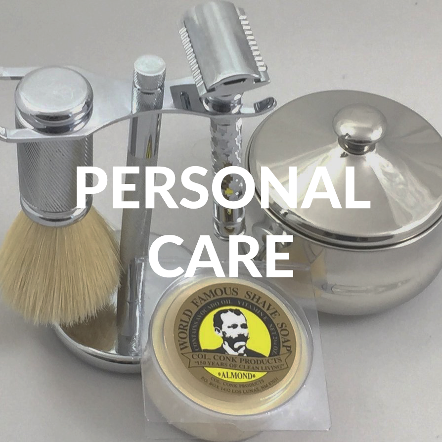

y u treat me like trash
u can't get rid of me haha
u r trashy and u know it
"Zero Waste is a goal that is ethical, economical, efficient and visionary, to guide people in changing their lifestyles and practices to emulate sustainable natural cycles, where all discarded materials are designed to become resources for others to use.
Zero Waste means designing and managing products and processes to systematically avoid and eliminate the volume and toxicity of waste and materials, conserve and recover all resources, and not burn or bury them.
Implementing Zero Waste will eliminate all discharges to land, water or air that are a threat to planetary, human, animal or plant health."
-- Internationally accepted, peer-reviewed definition adopted by the Zero Waste International Alliance, 29 November 2004
The typical household throws out 10-15% of the food it purchases
Between
20% and 40% of fruit and vegetables are rejected by supermarkets before they even hit the shelves because they don’t adhere to their cosmetic standards, ie. they’re misshapen, lumpy or just plain weird-looking!
But that’s how nature intended them, right?
If just 25% of American families used 10 fewer plastic bags a month, it would save over 2.5 billion bags a year.


Americans produce enough styrofoam cups every year to circle the earth
436 times. These cups are completely non-biodegradable, deplete the Earth’s ozone layer, waste enormous amounts of landfill, and are deadly to marine life.
Ceramic mugs cost a few dollars.


Turn your trash can into a big compost keeper. Use your tiny compost keeper as a trash can (on the market, the sizes for these seem to be reversed).
Buy second-hand clothing.
Be ruthless on fit, if it fits well, you’re most likely to wear it.
Donate unworn pieces.
Learn of few sewing tricks (like shortening a hem or darning) to repair clothing!

For shaving, (re)use a safety razor and shaving soap.
Switch from toothpaste to homemade tooth powder(2 tb baking soda, 1/8 ts white stevia powder in a parmesan shaker).
In lieu of disposable feminine products, invest in menstrual cup and reusable liners.
Forget about Q-tips, they are not good for you anyways. Do your research.
Welcome natural cleaning alternatives! Castile soap on floors and sinks, homemade all purpose cleaner, baking soda for scrubbing jobs, and vinegar for mildew.
Use worn-out clothing items made into rags on your un-washable messes (wax/auto grease/glue/caulk).
Avoid using disposable plates and silverware.
When eating out, bring tupperware to save leftovers.
Reinvent your leftovers before they go bad.